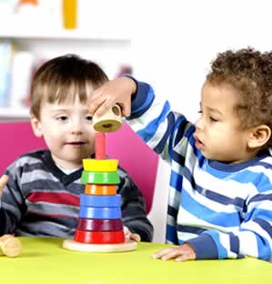

<!DOCTYPE html><html lang="es"><head><meta charset="utf-8"/><meta name="viewport" content="width=device-width, initial-scale=1"/><title>Guarderia Reforma | estimulacion temprana | infantil</title><meta name="keywords" content="Guarderia Reforma, estimulacion temprana, infantil, cuidado niños, centro infantil, guarderia, maternal, niños, educacion, cuidado infantil, jardin pre-escolar, estancia infantil, cuidado bebés, juegos infantiles"><meta name="description" content="Guarderia en Reforma, estimulacion temprana, cuidado niños, son palabras que describen a la guarderia infantil con servicio en estimulacion temprana, maternal, estimulacion temprana para niños desde bebes hasta grandes, en educacion y estimulacion temprana mira hacia el bien de los niños la estimulacion temprana apoya a bebes pues la estimulacion temprana para bebes, estimulacion temprana para niños, estimulacion temprana para niñas, estimulacion temprana para niños especiales"><link rel="canonical" href="http://kokundaycare.com.mx/"><link rel="stylesheet" href="https://cdnjs.cloudflare.com/ajax/libs/bulma/0.5.1/css/bulma.min.css"/><link rel="stylesheet" href="https://maxcdn.bootstrapcdn.com/font-awesome/4.7.0/css/font-awesome.min.css"/><link rel="stylesheet" href="https://cdnjs.cloudflare.com/ajax/libs/slick-carousel/1.7.1/slick.min.css"/><link rel="stylesheet" href="https://cdnjs.cloudflare.com/ajax/libs/slick-carousel/1.7.1/slick-theme.min.css"/><link rel="stylesheet" href="https://cdnjs.cloudflare.com/ajax/libs/fancybox/3.1.20/jquery.fancybox.min.css"/><link rel="stylesheet" href="https://fonts.googleapis.com/css?family=Poppins:300,400,700"/><link rel="stylesheet" type="text/css" href="app/app.css"/><link rel="icon" type="image/png" href="favicon.png"/></head><body><div class="topbar"><div class="columns"><div class="column"><span class="slogan">Guardería en Polanco</span><span class="topbar-text"><a href="tel:68205500"><i class="fa fa-phone"></i><span>+52 (55) 6820 5500</span></a></span><span class="topbar-text"><a href="mailto:info@kokundaycare.com.mx"><i class="fa fa-envelope"></i><span>info@kokundaycare.com.mx</span></a></span></div></div></div><section class="section"><div class="container"><div class="navbar"><div class="navbar-brand"><a href=""></a><div class="navbar-burger" data-target="#mainMenu"><span></span><span></span><span></span></div></div><div class="navbar-menu" id="mainMenu"><nav class="navbar-end"><a class="navbar-item" href="daycare-preschool.html">Nosotros</a><a class="navbar-item" href="guarderia.html">Servicios</a><a class="navbar-item" href="playgroups.html">Playgroups</a><a class="navbar-item" href="educacion-infantil.html">Educación</a><a class="navbar-item" href="talleres-infantiles.html">Kokun Kids</a><a class="navbar-item" href="cuidado-infantil.html">Contacto</a></nav></div></div></div></section><div class="container"><div class="notification is-purple has-text-centered">THE PERFECT BALANCE OF LEARNING AND PLAY IN A FUN, SAFE AND NURTURING ENVIRONMENT</div></div><section class="section"><div class="container"><div class="columns"><div class="column is-8"><h2 class="text-purple">Para nosotros cada niño es único, especial y tiene un potencial ilimitado</h2></div></div><div class="columns"><div class="column is-5 is-offset-1"><h3 class="text-green mb">En Kokun somos...</h3><p>Somos un grupo de personas y especialistas en educación temprana y preescolar brindando todo nuestro amor y respeto a cada uno de los pequeños a nuestro cuidado.</p><p>Nos esmeramos en conocer a cada niño y niña, desde sus hábitos de dormir,  hasta la comida que más les gusta</p><h4 class="has-text-centered text-orange mt mb">"Cuidado Sensible y receptivo Kokun"</h4><p>Trabajamos todos los días para  que a través del amor, respeto y confianza se conviertan en seres humanos de valores extraordinarios.</p></div><div class="column is-6"></div></div></div></section><section class="section is-blue"><div class="container"><div class="columns"><div class="column is-6 is-offset-3"><h2 class="has-text-centered text-white">Kokun es un lugar cálido, confortable y estimulante</h2></div></div><div class="columns"><div class="column is-5 is-offset-1"><p class="text-white">Sabemos que el entorno estimula y fomenta la exploración favoreciendo el desarrollo de habilidades cogitivas y psico-motrices, es por eso que nuestras instalaciones  están especialmente diseñadas para brindar el soporte físico y emocional que nuestros pequeños necesitan.</p></div><div class="column is-6"><p>Los espacios, el mobiliario y los materiales didácticos que se utilizan diariamente, cumplen con las especificaciones de seguridad e higiene que marca un programa de alta calidad en Educación Temprana.</p></div></div></div></section><section class="section kokun-hogar"><div class="container"><div class="columns"><div class="column is-6 is-offset-3"><h2 class="has-text-centered text-purple">Kokun es el Mejor Hogar fuera de Casa</h2></div></div></div><div class="columns mt2"><div class="column is-10 is-offset-1"><div class="columns"><div class="columns"><div class="column is-4"><div class="card kokun-card"><a class="card-image" href="guarderia.html"><figure class="image"><div class="hovertext is-blue"><p class="is-size-3">Day Care</p></div></figure></a><div class="card-content has-text-centered"><p class="is-size-3 text-blue">DayCare</p><p>En nuestro Day Care recibimos a pequeños desde 45 día de nacidos hasta los 3 años</p><p><a class="text-purple" href="guarder.html">Ver más</a></p></div></div></div><div class="column is-4"><div class="card kokun-card"><a class="card-image" href="guarderia.html"><figure class="image"><div class="hovertext is-green"><p class="is-size-3">After School</p></div></figure></a><div class="card-content has-text-centered"><p class="is-size-3 text-green">After School</p><p>Te invitamos a descubrir las diferentes actividades que tenemos por las tardes especialmente para tus pequeños.</p><p><a class="text-purple" href="guarder.html">Ver más</a></p></div></div></div><div class="column is-4"><div class="card kokun-card"><a class="card-image" href="guarderia.html"><figure class="image"><div class="hovertext is-purple"><p class="is-size-3">Talleres</p></div></figure></a><div class="card-content has-text-centered"><p class="is-size-3 text-purple">Talleres</p><p>En Kokun encontrarás un espacio de diversión y recreación, al mismo tiempo que trabajas las diferentes áreas del aprendizaje infantil.</p><p><a class="text-purple" href="talleres-infantiles.html">Ver más</a></p></div></div></div></div></div></div></div></section><div class="is-purple"><div class="container"><div class="columns"><div class="column is-6 is-offset-3"><h2 class="has-text-centered text-white mt2 mb2">55 33 75 10  y  55 33 86 61</h2></div></div></div></div><footer class="footer"><div class="container"><div class="columns"><div class="column is-4"><h5 class="is-size-4 text-blue">Sucursal Reforma</h5><p>Río Rhin No. 47, Col Cuahutémoc, <br> CP 06500, Ciudad de México, CDMX. <br>Tel. 55 33 75 10 y 55 33 86 61</p></div><div class="column is-4"><h5 class="is-size-4 text-blue">Sucursal Polanco</h5><p>Calle Julio Verne 18, Polanco V Sec, <br> CP 11560 Ciudad de México, CDMX. <br> Tel. 5280 7514 </p></div><div class="column is-4"><h5 class="is-size-4 text-blue">Contacto</h5><div class="level"><div class="level-item"><a class="fa fa-facebook is-green" href="https://www.facebook.com/KokunDayCare/" target="_blank"></a></div><div class="level-item"><a class="fa fa-twitter is-green" href="https://twitter.com/kokundaycare" target="_blank"></a></div><div class="level-item"><a class="fa fa-google-plus is-green" href="https://plus.google.com/102833441639096713965" target="_blank"></a></div></div></div></div></div></footer><script src="https://cdnjs.cloudflare.com/ajax/libs/jquery/3.2.1/jquery.min.js"></script><script src="https://cdnjs.cloudflare.com/ajax/libs/slick-carousel/1.7.1/slick.min.js"></script><script src="https://cdnjs.cloudflare.com/ajax/libs/fancybox/3.1.20/jquery.fancybox.min.js"></script><script src="app/app.js"></script><script src="http://livejs.com/live.js"></script></body></html>